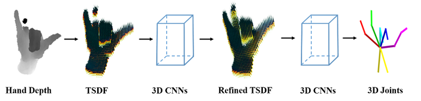

|
Hand3D: Hand Pose Estimation using 3D Neural Network Xiaoming Deng1 Shuo Yang1 Yinda Zhang2 Ping Tan3 Liang Chang4 Hongan Wang1 1 Institute of Software CAS 2 Princeton University 3 Simon Fraser University 4 Beijing Normal University |
|  |
AbstractWe propose a novel 3D neural network architecture for 3D hand pose estimation from a single depth image. Different from previous works that mostly run on 2D depth image domain and require intermediate or post process to bring in the supervision from 3D space, we convert the depth map to a 3D volumetric representation, and feed it into a 3D convolutional neural network(CNN) to directly produce the pose in 3D requiring no further process. Our system does not require the ground truth reference point for initialization, and our network architecture naturally integrates both local feature and global context in 3D space. To increase the coverage of the hand pose space of the training data, we render synthetic depth image by transferring hand pose from existing real image datasets. We evaluation our algorithm on two public benchmarks and achieve the state-of-the-art performance. The synthetic hand pose dataset will be available. VideoPaper X. Deng*, S. Yang*, Y. Zhang*, P. Tan, L. Chang, H. Wang. DownloadThe synthetic hand pose dataset will be available. |